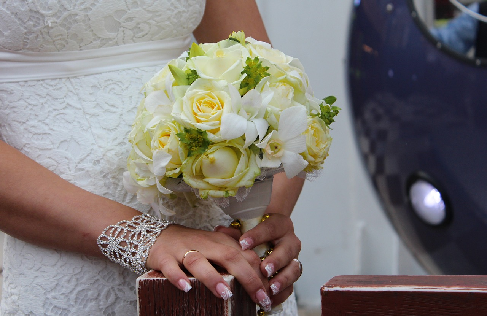
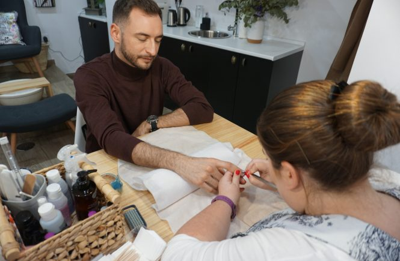

NOVIAS Y UÑAS, UÑAS Y BODAS.
27 de febrero, 2023.

Las argentinas por lo general nos decantamos por unas uñas
almendradas y no muy largas. En los tonos variamos un poco más, ya
que hay las que siguen pidiendo una manicura francesa hasta las que
piden un rojo. La verdad que la típica frase de “quiero algo
discreto y elegante” ha cambiado por “quiero algo que rompa un poco
“.
Seguir leyendo
Son las menos las que piden una manicura francesa, y creemos que
sigue siendo un acierto para todas aquellas novias que quieren algo
discreto, que no se note mucho pero que se vea una uña arreglada. El
color rosa en tono claro ha causado furor entre nuestras novias.
María Pombo, una influencer española, también ha sido culpable de
esta fiebre por este color. Es un color muy favorecedor para todo
tipo de uñas y pieles. La marca que utilizamos en nuestro centro es
ORLY; y han llamado a este color KISS THE BRIDE (besa a la novia) Me
da a mi que fueron unos visionarios y ya sabían que su color iba a
ser muy demandado entre nuestras novias. Y de la discreción pasamos
al quiero romper con un tono de la gama de los rojos. Desde el rojo
vivo, pasando por el rojo teja y terminando por el rojo burdeos. Hay
en otros países que arriesgan más con otros colores, incluso con
nail art, dibujos y pedrería. Consejos para las novias Si vais a
optar por un color fuera de lo clásico os recomendamos que vengáis
con tiempo para elegir el color perfecto, o para que nos de tiempo a
pedirlo en el caso de no tenerlo. Lo ideal sería que unos meses
antes del gran día vayáis preparando la uña y cutícula. Si tienes
las uñas mordidas y quieres una uña larga, si tienes muchos
padrastros…siempre es aconsejable que empecéis a tratarlas unos
meses antes. Si no tenéis tiempo o no veis el momento de acudir a
vuestro centro os damos unos consejitos para que las vayáis
preparando en casa. No cortar la uña, SIEMPRE limar. Proteger uña y
manos de productos químicos. Usar aceite de cutícula para nutrir
tanto la cutícula como todas las capas de las uña. Aunque tengamos
una uña de aspecto saludable y bonita se recomienda una hidratación
continua, como hacemos con el resto de nuestro cuerpo. ¿Queréis
saber la forma que más os favorece según el tamaño de la mano? Si
tienes las manos pequeñas suele favorecer la uña ovalada o
almendrada. Si tienes las manos anchas te favorecen las uñas
redondeadas de un largo intermedio. Si tienes manos alargadas te
puedes permitir unas uñas cuadradas rectangulares. Y si tienes las
manos grandes pueden irte más las uñas semicuadradas o redondas. El
esmalte elegido por las novias en su gran mayoría suele ser el
esmalte semipermanente, por su brillo y durabilidad. Y os damos el
último tip a todas aquellas que tenéis la uña quebradiza, que se
rompe con mirarla y se abre por capas. Os ayudará comer grasas
buenas, vitamina A y calcio, por ejemplo: Salmón, nueces, aguacate,
huevos, zanahoria, leche… Queridas novias, para cualquier otra
consulta ya sabéis donde encontrarnos
LOS HOMBRES Y LA MANICURA.
3 de septiembre, 2022.

¿Qué pensáis de que los hombres se hagan la manicura? Estamos en un
siglo en que los hombre están a la última en tema de barba, cortes
de pelo, limpiezas faciales, depilaciones…¿y las manos? ¿dónde está
lo raro?
Seguir leyendo
Aún no entiendo que nos siga sorprendiendo ver a un hombre
haciéndose la manicura. Unas manos bien cuidadas son de igual
importancia para los hombres que para las mujeres. No se trata de
que ahora queramos ver a los chicos con uñas de color rojo o rosa.
Se trata de ver unas manos hidratadas con unas uñas limpias y
arregladitas. Aunque hay chicos como el cantante de trap, Bad Bunny,
que ha sido visto en redes sociales varias veces con las uñas
esmaltadas. Esto último no es algo nuevo, ya que en los años 80
algunos artistas ya se decantaban por esta moda. Al que no le guste
no necesita llegar a este punto, podemos quedarnos con una manicura
caballero simple. Manicura caballero simple: ¿En qué consiste?
Consiste en cortar y limar las uñas hasta igualarlas, retirar
cutículas, sacar el brillo natural de la uña o esmaltarlas con un
esmalte especial para chicos que tiene una terminación en mate.
Hidratamos la cutícula con un aceite especial para ello y
finalizamos el tratamiento con un ligero masaje. En el caso de las
manicuras masculinas siempre se buscan hidratantes que no sean
“pringosas” y que no tengas aromas femeninos ( os conocemos, sabemos
lo que no os gusta) Para los que además de verse una uña cuidada
también quieren una piel super hidratada y luminosa os recomendamos
cualquiera de nuestros momentos SPA. El momento SPA se compone de
pequeños momentos de placer; exfoliación para retirar células
muertas, mascarilla y un masaje que vas a querer visitarnos todos
los lunes para empezar la semana con ganas. El porcentaje de hombres
que piden este servicio va aumentando en los últimos tiempos. La
edad de este perfil varia mucho. Nos visitan señores mayores, ya que
no pueden cortarse bien las uñas y ya aprovechan para hacerse una
manicura completa. Por otro lado, tenemos clientes que se han comido
las uñas durante años, y en el momento que prueban a hacerse una
manicura ya no pueden pasar sin ella. Además como dato curioso, ya
no vuelven a comerse más las uñas. También vienen chicos que tocan
la guitarra a ponerse uñas acrílicas ya que su uña natural sufre
mucho al tocar el instrumento continuamente. Y por lo general, nos
visitan chicos que trabajan cara al público y conocen la importancia
de tener una manos arregladas. La duración del tratamiento suele ser
entre 30 o 40 minutos, y el precio es de 12 euros para la manicura
caballero. Lo ideal para mantenerlas perfectas sería cada 15-20
días. CHICOS, APLICAROS EL CUENTO PORQUE LAS CHICAS NO QUEREMOS NI
VER NI TOCAR MANOS ÁSPERAS, UÑAS LARGAS Y PADRASTROS MOSDISQUEADOS,
AHÍ LO DEJO…
CONSEJOS DIVA NAILS: ¿LAS UÑAS NECESITAN RESPIRAR?
21 de agosto, 2021.

¿Crees que las uñas necesitan respirar? Nos encanta esmaltarnos las
uñas, cambiar de color cada tres semanas y lucir una manos
preciosas, ya no nos podemos ver la uña al desnudo, pero de repente
escuchamos decir que la uña tiene que descansar y respirar de vez en
cuando, ¿verdad o mito?
Seguir leyendo
Muchas de nuestras clientas nos preguntan si
deberían dejarlas descansar y nuestra respuesta siempre es la misma.
Las uñas no necesitan descansar un tiempo del esmalte y dejarla
respirar, ¿Por qué? Porque la uña esta compuesta por células muertas
endurecidas, es por ello que no nos duele cuando las cortamos. Las
partes de la uña que necesitan oxígeno y nutrientes son la matriz y
el lecho. Y el oxígeno y los nutrientes los aporta la sangre. Aún
así hay casos en los que la uña necesita descansar. Si se nota la
uña débil, o alguno de los productos utilizados para la preparación
de la uña o el protocolo de esmaltado le ha producido alergia, ha
estado mucho tiempo con uñas esculpidas y su uña ha sufrido mucho
con el limado de la misma, decoloración….en todos esos casos su
técnico de uñas debería recomendarle un descanso. A las que nos
gusta vernos las uñas esmaltadas, que buscamos el color perfecto
para combinarlo con el outfit del sábado nos aterra ir con la uña
desnuda, pero a veces y en algunos casos es necesario. Eso sí, si
nos dejamos la uña sin esmaltar lo ideal sería tener un aceite para
hidratar uña y cutícula diariamente.
TRUCOS PARA QUE TU ESMALTE DURE MÁS.
9 de julio, 2020.
Todas sabemos que por mucho empeño que le pongamos, nunca
conseguiremos en casa los excelentes resultados que ofrecemos en
salones especializados como el nuestro. Aún así, queremos compartir
con vosotras algunos trucos que conocemos para que tu esmalte
favorito dure más tiempo.
Seguir leyendo
A todas nos ha pasado, que de un día para otro el esmalte se
empieza a descascarillar. Y eso que has seguido todos los pasos
que te han contado, pero es lo que tiene hacerlo en casa. Los
salones de manicura y pedicura como La Gloria Nails estamos
especializados y somos profesionales que disponemos de los
mejores productos, aplicando las mejores técnicas. De todas
maneras, muchas veces pasa que no tenemos tiempo o simplemente
os gusta esmaltaros las uñas en casa, así queremos contaros
algunos de nuestros secretos ¡No todos, que sino no venís! 😜
Nuestros trucos para que tu esmalte dure más Los años de
experiencia y formación que hemos pasado para saberlo todo y más
sobre las uñas, los esmaltes, el diseño, los tratamientos.. nos
han llevado a descubrir muchas cositas que van de maravilla para
mantener el estado de tus esmaltes. Y te las vamos a contar
porque somos así de cracks. Uñas limpias Puede parecer una
obviedad, o incluso una estupidez. Pero hay que empezar por el
principio y este es tener las uñas bien limpitas. La eliminación
de la suciedad que tenga la superficie de la uña y los restos de
lacas anteriores que puedan quedar serán determinantes. Además
es una tarea sencilla, bastará con un algodón y producto
quitaesmalte. Hidratación de la uña Antes de comenzar es muy
importante también la aplicación de aceites como el de aguacate
o pepita de uva, así como crema hidratante específica de uñas,
que debe reposar durante unos minutos, y luego nos lavaríamos
las manos. Mientras esperas a que repose, puedes limar las uñas.
En el mercado tenemos muchas y muy buenas opciones para la
hidratación de las uñas. Uno de los productos que históricamente
mejor ha funcionado es la crema de albaricoque de Dior, que
tiene una concentración de agentes emolientes y fortificantes
esenciales para la salud de las uñas. La prebase Seguiríamos con
la aplicación de la prebase, que tiene como principal objetivo
la mayor fijación del color, así como para poder aplicar el
tratamiento específico que se pecio: calcio, endurecimiento,
alisado.. Por ejemplo, para las uñas blandas es imprescindible
aportarles un poco de dureza extra, así la uña no se dobla tan
fácilmente y el esmalte salta. El color en dos capas Llegamos a
la aplicación del color. Nuestra recomendación: en dos capas.
Debemos empezar cerca de la raíz, desde el centro de la uña
hasta la punta, y luego los laterales. Intentamos pasar
demasiadas veces por la misma zona, siendo mejor aplicar una
capa fina y después volver a repetir cuando la primera capa esté
seca. De esta manera, el esmalte será más flexible evitando que
este salte por cualquier golpe. La segunda y última capa debe
sellar el borde de la uña, creando una cobertura perfecta. Por
otro lado, es recomendable usar lacas para uñas que además sean
de larga duración ya que estarán preparadas para durar más.
Finalizador o top coat Esta última capa es clave ya que está
centrada en proteger el color y rayado del esmalte. Por
supuesto, debemos cubrir el borde también repitiendo la acción
de sellado como antes. Importante destacar que hay una leyenda
urbana que dice que debemos meter las manos recién esmaltadas
bajo un chorro de agua fría. Recomendamos no hacerlo ya que
hacer esto solo seca la capa superior, pero no la inferior, por
lo que al final la uña sigue estando igual. Secado rápido Como
opción si eres de las impacientes, te recomendamos que seques
tus uñas con algún producto de secado rápido. De hecho, el
secado rápido de las uñas favorece que el esmalte dure por más
tiempo. Existen lacas fijadoras o incluso en formato spray con
fórmula de silicona que crear una barrera protectora invisible
además. Esperamos que nuestros consejos os hayan servido de
ayuda. Si tenéis cualquier duda sobre lo que hemos explicado en
este artículo, no dudéis en contactar con nosotros.